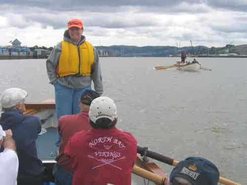
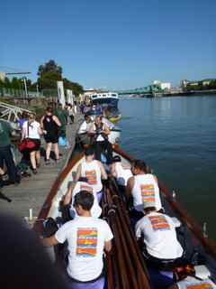

<table width="1000" border="0" cellpadding="0" cellspacing="0" align="center" <tr=""><tbody><tr><td></td></tr>
    <tr><td></td></tr>
    <tr>
      <td colspan="2" align="right">
        <b>
          <a class="undernav" href="results.html">race results</a> &nbsp;
          <a class="undernav" href="race-officials.html">race officials</a> &nbsp;
        </b>
      </td>
    </tr>
    <tr>
      <td>
    
        <!---------- Begin Content ---------->
    
    <br><b class="h3txt">EVENTS</b>
    
    
    
    
    
    <style type="text/css">
    body {
        margin-left: 6pt;
    }
    .border {
        line-height: normal;
        margin: auto;
        padding: 2pt;
    }
    .border {
        border: medium solid #006;
    }
    </style>
    
    <table width="92%" border="0">
      <tbody><tr>
        <td width="21%" height="175"><div align="right"><a href="events.html#alcatraz" class="reglink">
        </a></div></td>
        <td width="27%" align="left"><div align="left"><a href="events.html#alcatraz" class="reglink">Alcatraz Whaleboat Race, San Francisco</a> </div></td>
        
        <td width="22%"><div align="right"> <a href="events.html#oakcup" class="reglink">
        </a></div></td>
        <td><a href="events.html#oakcup" class="reglink">Oakland Cup, Oakland</a></td>
      </tr>
      <tr>
        <td height="175"><div align="right"><a href="events.html#kickoff" class="reglink"></a></div></td>
        <td><a href="events.html#kickoff" class="reglink">BAWRA Kick-off Party</a> </td>
        
      <td width="22%"><div align="right"><a href="events.html#skipwhip" class="reglink">
        </a></div></td>
         <td width="30%"><div align="left"><a href="events.html#skipwhip" class="reglink">Skipper Whipper, Vallejo</a></div></td>
        
      </tr>
      <tr>
        <td height="175"><div align="right"><a href="events.html#bridges" class="reglink">
        </a></div></td>
        <td><a href="events.html#bridges" class="reglink">Bridge to Bridge, San Francisco</a></td>
        
        <td width="22%"><div align="right"> <a href="events.html#pier" class="reglink">
        </a></div></td>
         <td width="30%"><div align="left"><a href="events.html#pier" class="reglink">Sprint the Pier, Berkeley</a></div></td>
      </tr>
      <tr>
        <td height="175"><div align="right"><a href="events.html#coastguard" class="reglink">
        </a></div></td>
        <td><a href="events.html#coastguard" class="reglink">Coast Guard Challenge, Oakland</a> </td>
       
        <td><div align="right"><a href="events.html#wcc" class="reglink">
        </a></div></td>
        <td><a href="events.html#wcc" class="reglink">West Coast  Classic, Alameda Estuary</a>&nbsp;</td>
      </tr>
      <tr>
        <td height="200"><div align="right"><a href="events.html#sprints" class="reglink"></a></div></td>
        <td><a href="events.html#sprints" class="reglink">ERC Sprints, San Francisco</a></td>
        <td><div align="right"><a href="events.html#portprom" class="reglink"></a></div></td>
        <td><a href="events.html#portprom" class="reglink">Port Promenade, San Francisco (inactive)</a></td>
      </tr>
      <tr>
        <td height="175" div="" align="right"><a href="events.html#estuary" class="reglink"></a></td>
        <td><a href="events.html#estuary" class="reglink">Head of the Oakland Estuary, Oakland</a> </td>
        <td><div align="right"><a href="events.html#tahoe" class="reglink"></a></div></td>
        <td><a href="events.html#tahoe" class="reglink">Tahoe Fun Row, Tahoe (inactive)</a></td>
      </tr>
      <tr>
        <td height="175" align="right" valign="top"><a href="events.html#oakcup" class="reglink"></a></td>
        <td width="27%"><a href="events.html#muck" class="reglink">High to Harbor Muck Race, Alameda</a></td>
        <td><div align="right"></div></td>
        <td>&nbsp;</td>
      </tr>
    </tbody></table>
    <p>&nbsp;</p>
    <p>&nbsp;</p>
    
    <hr>
    <p><!-- Alcatraz Whaleboat Race, San Francisco --></p>
    
    <p><a name="alcatraz" id="alcatraz"><b class="h2txt">Alcatraz Whaleboat Race, San Francisco</b></a>
    <b>(Marina: <a href="http://www.itcrowing.com/marina.html#hydest" class="reglink" target="hydest">Hyde Street Harbor</a>)</b></p>
    
    <p><b>Race Organizer: </b><a href="http://www.bawra.org" class="reglink" target="alcatraz">BAWRA</a> / <a href="http://www.itcrowing.com" class="reglink" target="alcatraz"> Iron Oars Rowing Club
    </a></p>
    <p><b>Race Course:</b> A one-mile race from the south east corner of Alcatraz Island to Aquatic Park in San Francisco Bay.</p>
    <p><b>Best Viewing:</b> Aquatic Park.</p>
    <p><b>Awards Location: </b><a href="http://www.nps.gov/safr/planyourvisit/maps.htm" class="reglink" target="alcatraz">
          Aquatic Park</a>, across from the Sea Scouts Base. Aquatic Park is within the San
          Francisco Maritime National Historic Park. It is located at the foot of
          Van Ness Avenue north of North Point St. Park along Van Ness.</p>
    
    
    <p><a href="http://maps.google.com/maps?f=q&amp;hl=en&amp;geocode=&amp;time=&amp;date=&amp;ttype=&amp;q=van+ness+%26+north+point,+san+francisco,+ca&amp;sll=37.80506,-122.42535&amp;sspn=0.011647,0.019956&amp;ie=UTF8&amp;z=16&amp;iwloc=addr&amp;om=1" class="reglink" target="alcatraz">Click
             here</a> to create your own driving directions to/from Aquatic Park.</p>
      <p><a class="reglink" href="https://drive.google.com/drive/folders/1QfpEDbZGI2xQ-0d2zVbboitFRPDpEBgW?usp=drive_link">Cox Meeting Agendas and Race Debriefs</a></p>
    
    <hr>
    <p><!-- BAWRA Kickoff Party, San Francisco --></p>
    
    <p><a name="kickoff" id="kickoff"><b class="h2txt">BAWRA Kick-off Party, San Francisco</b></a></p><p></p>
    
    <p>The Bay Area Whaleboat Rowing Association (<a href="http://www.bawra.org" class="reglink" target="alcatraz">BAWRA</a>)  kick-off party in
       the spring sets the right tone for whaleboat racing.
       Food, beer, dancing and lane draws. Don�t miss it!</p>
    <p>The party location may change from year to year, so check the Schedule page for the latest information.</p>
             
    <hr>         
    <p><!-- Bridge to Bridge, San Francisco --></p>
    
    <p><a name="bridges" id="bridges"><b class="h2txt">Bridge to Bridge, San Francisco </b></a>
    <b>(Marina: <a href="http://www.itcrowing.com/marina.html#hydest" class="reglink" target="hydest">Hyde Street Harbor</a>)</b></p>
              
    <p><b>Race Organizer:</b> <a href="http://www.bawra.org" class="reglink" target="bridges">BAWRA</a> / <a href="http://www.itcrowing.com" class="reglink" target="alcatraz">Iron Oars Rowing Club </a>
    </p>
    <p><b>Race Course:</b> A five-mile race from the Golden Gate Bridge to the Bay Bridge in San Francisco Bay.</p>
    <p><b>Best Viewing:</b> All along the San Francisco Waterfront. </p>
    <p><b>Best hills:</b> In the Presidio along Lincoln Avenue, Fort Mason bluffs, Coit Tower. </p>
    <p><b>Best waterfront:</b> Crissy Field, the Marina Green, Municipal Pier at Aquatic Park, 
          the end of Pier 39, the end of Pier 1 and the Ferry Pier at the Ferry Building, the Port Promenade. </p>
    <p><b>Awards Location:</b> See current year race information for Awards location.</p>
    <p><a class="reglink" href="https://drive.google.com/drive/folders/1wxIHb2FnvP1wOBAP28ZCkf2LdgsLgREJ?usp=drive_link">Cox Meeting Agendas and Race Debriefs</a></p>
    
    
          
    <hr>
    <p><!-- Coast Guard Challenge, Oakland --></p>  
           
    <p><a name="coastguard" id="coastguard"><b class="h2txt">Coast Guard Challenge, Oakland</b></a>
    <b>(Marina: <a href="http://www.itcrowing.com/marina.html#ecove" class="reglink" target="ecove">Embarcadero Cove Marina</a>)</b></p>
            
    <p><b>Race Organizer:</b> <a href="http://www.bawra.org" class="reglink" target="bawra">BAWRA</a> / 
          US Coast Guard Rowing Team 
    </p>
    <p><b>Race Course:</b> A Timed Race about a mile and a half around <a href="http://en.wikipedia.org/wiki/Coast_Guard_Island" class="reglink" target="coastguard">Coast Guard Island</a> in the Oakland Estuary.</p>
    <p><b>Best Viewing:</b> From Coast Guard Island, Union Point Marina, the causeway to Coast Guard Island, 
          along Embarcadero in the regional park with benches and a pier, Township Commons.</p>
    <p align="left"><strong>Awards Location:</strong> See the current year information for the awards location. If on Coast Guard Island, you will be asked ahead of time 
          for a contact name for your club, and/or the names of every guest you
          plan to bring on the island. You will  need a picture ID
          for access to the Island and proof of car insurance if you drive onto the island. </p>
    <p><a href="http://maps.google.com/maps?f=d&amp;hl=en&amp;geocode=11439091417462030044,37.780229,-122.246403&amp;time=&amp;date=&amp;ttype=&amp;saddr=&amp;daddr=Coast+Guard+Island+Br+%4037.780229,+-122.246403&amp;sll=37.774853,-122.238436&amp;sspn=0.046608,0.079823&amp;ie=UTF8&amp;ll=37.780229,-122.246403&amp;spn=0.023302,0.039911&amp;z=15&amp;om=1" class="reglink" target="coastguard">Click here</a> to create your own driving directions to/from Coast Guard Island.</p>
    <p><a class="reglink" href="https://drive.google.com/drive/folders/1McKmJPYHxI_LF9OLDRCCkqF38f5_NbpW?usp=drive_link">Cox Meeting Agendas and Race Debriefs</a></p>
    
         
     <hr> 
    <p><!-- ERC Sprints, San Francisco --></p>
           
    <p><a name="sprints" id="sprints"><b class="h2txt">ERC Sprints, San Francisco</b></a>
    <b>(Marina: <a href="http://www.itcrowing.com/marina.html#sbeach" class="reglink" target="sbeach">Pier 40/South Beach Harbor</a>)</b></p>
    
    <p><b>Race Organizer:</b> <a href="http://www.bawra.org" class="reglink" target="bawra">BAWRA</a> / <a href="http://www.ercrowing.org/" class="reglink" target="sprints">
          Embarcadero Rowing Club </a>
    </p>
    <p><b>Race Course:</b> A half-mile sprint  in front of the 
          <a href="http://bayviewboatclub.org/" class="reglink" target="kickoff">
    Bay View Boat Club</a> in San Francisco Bay. </p>
    <p><b>Best Viewing:</b> The Bay View Boat Club, the Mariposa Hunters Point Boat Club, and the waterfront in between.</p>
    <p><b>Awards Location: </b>The party is at the <a href="http://bayviewboatclub.org/" class="reglink" target="kickoff">
          Bay View Boat Club</a>,  489 Terry Francois Blvd (aka
    China Basin Street) / Pier 54 in San Francisco. Parking is available in the lot or on the street.</p>
    <blockquote>
      <p><a href="http://maps.google.com/maps?f=q&amp;hl=en&amp;geocode=&amp;time=&amp;date=&amp;ttype=&amp;q=489+terry+francois,+san+francisco,+ca&amp;sll=37.80506,-122.42535&amp;sspn=0.011647,0.019956&amp;ie=UTF8&amp;ll=37.772173,-122.387266&amp;spn=0.023305,0.039911&amp;z=15&amp;om=1" class="reglink" target="kickoff">
      Click here</a> to create your own driving directions to/from the Bay View Boat Club.</p>
    </blockquote>
    <p>
    </p><p><a class="reglink" href="https://drive.google.com/drive/folders/13PufCgW0JuGzskeoYmgJk-us25w3lRDd?usp=drive_link">Cox Meeting Agendas and Race Debriefs</a></p>
    
    <hr>
    <p> <!-- Head of the Oakland Estuary, Oakland --></p>
    
    <p><a name="estuary" id="estuary"><b class="h2txt">Head of the Oakland Estuary, Oakland</b></a>
    <b>(Marina: <a href="http://www.itcrowing.com/marina.html#ecove" class="reglink" target="ecove">Embarcadero Cove Marina</a>)</b> </p>             
       
        
    <p><b>Race Organizer:</b> <a href="http://www.bawra.org" class="reglink" target="bawra">BAWRA</a> /<a href="http://www.itcrowing.com" class="reglink" target="alcatraz">Iron Oars Rowing Club </a></p>
    <p><b>Race Course:</b> A three mile head race in the Oakland Estuary.
    </p><p><b>Best Viewing:</b>  Township Commons and the shorline park along Brooklyn Basin. </p>
    <p><b>Awards Location: </b><a href="https://brooklynbasin.com/parks/township-commons/" class="reglink" target="estuary"> 
          Township Commons</a>, on the Estuary north of Coast Guard Island. Use the street address for <a href="https://goo.gl/maps/wWLC3DrcTHmz5pj77" class="reglink" target="estuary">9th Avenue Terminal at 288 9th Avenue, Oakland, CA.</a></p>
    <p><a class="reglink" href="https://drive.google.com/drive/folders/1Ke9oWCpV41oonBomN9clkX5fds6im3Td?usp=drive_link">Cox Meeting Agendas and Race Debriefs</a></p>
    
    
    <hr>
    <p> <!-- High to Harbor Muck Race --></p>
    
    <p><a name="muck" id="muck"><b class="h2txt">High to harbor Muck Race</b></a>
    <b>(Marina: <a href="http://www.itcrowing.com/marina.html#ecove" class="reglink" target="ecove">Embarcadero Cove Marina</a>)</b> </p>             
       
        
    <p><b>Race Organizer:</b> <a href="http://www.bawra.org" class="reglink" target="bawra">BAWRA</a> / <a href="http://oewrs.org/Ketos.html" class="reglink">Oakland Estuary Whaleboat Rowing Society (OEWRS) -- Ketos</a> 
    </p>
    <p><b>Race Course:</b> Race between Fruitvale Bridge and the <a href="http://www.aeolianyc.org/" class="reglink">Aeolian Yacht Club.</a>
    </p><p><b>Best Viewing:</b> Fruitvale Bride, the shorline parks on both sides of the Estuary, the shoreline park north of the Aeolian Yacht Club</p>
    <p><b>Awards Location: </b><a href="https://goo.gl/maps/qSiKxakiSy2FCLV28" class="reglink" target="muck">Aeolian Yacht Club at 980 Fernside Blvd<br>
    ?Alameda, California, 94501.</a></p>
    <p><a class="reglink" href="https://drive.google.com/drive/folders/1eD8LGBY8eEj4atxUu-9e3vdVFhnOrYH-?usp=drive_link">Cox Meeting Agendas and Race Debriefs</a></p>
    
    
    <hr>
    <p><!-- Oakland Cup, Oakland --></p>
    
    <p><a name="oakcup" id="oakcup"><b class="h2txt">Oakland Cup, Oakland</b></a>
    <b>(Marina: <a href="http://www.itcrowing.com/marina.html#unionpt" class="reglink" target="ecove">Embarcadero Cove Marina</a>)</b> <b></b></p>
           
    <p><b>Race Organizer:</b> <a href="http://www.bawra.org" class="reglink" target="bawra">BAWRA</a> / <a href="https://www.facebook.com/WestCoastRowing/?fref=ts" class="reglink" target="alcatraz">West Coast Rowing</a></p>
    <p><b>Race Course:</b> One-mile race in the Oakland Estuary.</p>
    <p><b>Best Viewing: </b> <a href="http://www.portofoakland.com/communit/public_30.html" class="reglink" target="oakcup">
    (Channel) Estuary Park</a> on Embarcadero between Fallon and 5th Ave. in Oakland. </p>
    <p><b>Awards Location:</b> At the end of the pier at Estuary Park. Use the Jack London Aquatic Center (JLAC) parking area  at 115 Embarcadero. 
          This is approximately one mile east of Jack London Square.</p>
    <p><a href="http://goo.gl/maps/xDNt" class="reglink" target="oakcup"> 
      Click here</a> to create your own driving directions to/from JLAC/Estuary
          Park.</p>
          <p><a class="reglink" href="https://drive.google.com/drive/folders/1-kMFV70p_d14ybTzL29fIfVdKWUevAWs?usp=drive_link">Cox Meeting Agendas and Race Debriefs</a></p>
    
    <hr>
    <p> <!-- Skipper Whipper, Vallejo --></p>
    
    <p><a name="skipwhip" id="skipwhip"><b class="h2txt">Skipper Whipper, Vallejo</b></a>
    <b>(Marina: <a href="http://www.itcrowing.com/marina.html#vallejo" class="reglink" target="vallejo">Vallejo Marina</a>)</b> </p>
                     
    <p><b>Race Organizer:</b> <a href="http://www.bawra.org" class="reglink" target="bawra">BAWRA</a> / <a href="http://www.somira.org/" class="reglink" target="skipwhip">
          Straits of Mare Island Rowing Association (SOMIRA)</a> 
      </p>
    <p><b>Race Course:</b> A "W" course in Mare Island Channel.</p>
    <p><b>Best Viewing:</b> Along the waterfront in front of Coal Shed Brewery.</p>
    <p><b>Awards Location: </b>Mare Island Brewing Co., <a href="https://www.mareislandbrewingco.com/coal-shed" class="reglink" target="skipwhip">Coal Shed Brewery</a></p>
    <p><a class="reglink" href="https://drive.google.com/drive/folders/11JAb43Gc-EzXU3ikN9OpkDfAPnCTUXAk?usp=drive_link">Cox Meeting Agendas and Race Debriefs</a></p>
    
    <hr>                 
    <p> <!-- Sprint the Pier, Berkeley --></p>
    
    <p><a name="pier" id="pier"><b class="h2txt">Sprint the Pier, Berkeley</b></a>
    <b>(Marina: <a href="http://www.itcrowing.com/marina.html#Berkeley" class="reglink" target="berkeley">Berkeley Marina</a>)</b> </p>
    <p><b>Race Organizer:</b> <a href="http://www.bawra.org" class="reglink" target="alcatraz">BAWRA</a> /<a href="http://www.solanorowingclub.org/">Solano Rowing Club</a></p>
    <p><b>Race Course:</b> Zig-zag course in front of the breakwater at the Berkeley Marina.  </p> 
    <p><b>Best Viewing:</b> The end of Spinnaker Way.   </p>
    <p><b>Awards Location: </b><a href="https://inspiresailing.com/" class="reglink" target="pier">
          Inspire Sailing</a>, <a href=" https://goo.gl/maps/HBTyYmVKhPm17e3e7/">1 Spinnaker Way</a> on the Marina.</p>
    <p><a class="reglink" href="https://drive.google.com/drive/folders/1h2K6A1khdfkhkA2oz70lhcUeuymzyP5S?usp=drive_link">Cox Meeting Agendas and Race Debriefs</a></p>
          
    <hr>
    <p>
      <!-- West Coast Classic, Alameda -->
    </p>
    <p><a name="redeagle" id="wcc"><b class="h2txt">West Coast  Classic, Alameda</b></a> <b>(Marina: <a href="http://www.itcrowing.com/marina.html#ecove" class="reglink" target="#ecove">Embarcadero Cove Marina</a>)</b></p>
    <p><b>Race Organizer:</b> <a href="http://www.bawra.org" class="reglink" target="bawra">BAWRA</a> / <a href="https://www.facebook.com/WestCoastRowing/?fref=ts" class="reglink" target="alcatraz"> West Coast Rowing</a></p>
    <p><b>Race Course:</b> A two-leg sprint between Park Street Bridge and Fruitvale Bridge in the Oakland Estuary.</p>
    <p><b>Best Viewing:</b> From the parking lot behind Nob Hill Foods, 2351 Blanding Ave. (between Broadway and Everett Streets), Alameda, Ca. </p>
    <p><b>Awards Location:</b> <a href="https://www.aycinc.org/" class="reglink"> Alameda Yacht Club</a></p>
    <p><b>Cox and Race Officials:</b> <a href="https://drive.google.com/drive/folders/1DTvLLtjIHd5ARj_D9fS4kYHwc9uC7fGL?usp=drive_link" class="reglink">Click here for meeting agendas and debriefs from prior years.</a></p>
    <blockquote>
      <blockquote>
        <blockquote>
          <blockquote>
    <p> <a href="http://goo.gl/maps/l9dx" class="reglink" target="redeagle"> Click here</a> to get driving directions to/from  Nob Hill Foods.</p>
          </blockquote>
        </blockquote>
      </blockquote>
    </blockquote>
    <p><a class="reglink" href="https://drive.google.com/drive/folders/1DTvLLtjIHd5ARj_D9fS4kYHwc9uC7fGL?usp=drive_link">Cox Meeting Agendas and Race Debriefs</a></p>
    
    <p>&nbsp;</p>
    
    <hr>
    <p> <!-- Tahoe Fun Row, Tahoe --><strong>INACTIVE</strong></p>
    <hr>
    <p><a name="portprom" id="portprom"><b class="h2txt">Port Promenade, San Francisco</b></a> <b>(Marina: <a href="http://www.itcrowing.com/marina.html#sbeach" class="reglink" target="sbeach">Pier 40/South Beach Harbor</a>)</b></p>
     
    <p><b>Race Organizer:</b> <a href="http://www.bawra.org" class="reglink" target="bawra">BAWRA</a> / San Francisco Whalers </p>
     <p><b>Race Course:</b> Sprint in McCovey Cove.</p>
     <p><b>Best Viewing:</b><a href="http://sanfrancisco.giants.mlb.com/sf/ballpark/mccoveypoint.jsp" class="reglink" target="portprom"> McCovey Point at China Basin Park</a>, and the south side of <a href="http://mlb.mlb.com/sf/ballpark/index.jsp" class="reglink" target="portprom"> AT&amp;T Park.</a></p>
    <p> <b>Awards Location: </b>McCovey Point</p>
     <p>&nbsp;</p>
     <blockquote>
    <p><a href="http://goo.gl/maps/xwNZ" class="reglink" target="kickoff"> Click here</a> to create your  driving directions to/from McCovey Point. </p>
    <p>&nbsp;</p>
    <p>&nbsp;</p>
    <p>&nbsp;</p>
    <p>&nbsp;</p>
    <p>&nbsp;</p>
    <hr>
    <a name="tahoe" id="tahoe"><b class="h2txt">Tahoe Fun Row, Tahoe</b> -- Inactive</a> 
    <p><b>Race Organizer:</b> <a href="http://www.bawra.org" class="reglink" target="bawra">BAWRA</a> /</p>
    <p><b>Race Course:</b> Somewhere on the <a class="reglink" href="javascript:pop_image('../images/maps/NorthShoreTahoe.gif', 405, 320, 'North%20Shore%20Lake%20Tahoe');"> North Shore.</a> You never know where from year to year – sometimes not even until race day! <br>
    </p>
    <p>&nbsp;</p>
    <p>&nbsp;</p>
    <p>&nbsp;</p>
    <p>&nbsp;</p>
    <p>&nbsp;</p>
    <p>&nbsp;</p>
    <hr>
    <p>&nbsp;</p>
    </blockquote>
              <!-- BR><b>Event Schedule and Race Crew Instructions:</b --><br>
    <!---------- End Content ---------->
    
      </td></tr></tbody></table>